library(plotly)
library(forecast)
library(MASS)
library(tidyverse)
library(lubridate)
library(timetk)
library(tibble)
library(zoo)
library(tsibble)
library(feasts)
library(fable)
library(cowplot)
library(astsa)
library(TSstudio)
library(fabletools)
library(TSA)
library(readxl)
library(modeltime)PIBQuarto
El siguiente trabajo abarca todas las metodologías vistas en el semestre 2024-1 de la asignatura Series de Tiempo Univariadas, utilizando la medición trimestral del PIB en Colombia a precios constantes (calculando el agregado a partir de la suma de las actividades económicas de Colombia), a partir del primer trimestre de 2005, hasta el último trimestre del 2023.
Integrantes
- Ander Cristancho
- Anderson Guarin
- Juan David Duitama
Librerías utilizadas
Importación de datos
PIB3 <- read_excel("C:/Users/ander/OneDrive - Universidad Nacional de Colombia/Documentos/(2024-01) Octavo Semestre/Series de Tiempo Univariadas/Proyecto/1. Bases de Datos/PIB.xlsx", range = "AS18:AS93", col_names = FALSE)New names:
• `` -> `...1`Visualización de datos
PIB3TS <- ts(PIB3, start = c(2005, 1), end = c(2023, 4), frequency = 4)
#Convirtiendo los datos originales en objeto serie de tiempo(ts)
plot_ly( x = time(PIB3TS), y = PIB3TS, type = 'scatter', mode = 'lines',color=I("red")) %>%
layout(title = 'PIB Trimestral en Colombia',
xaxis = list(title = 'Trimestre', rangeslider = list(type = 'date')))La conclusión inicial con este primer gráfico es que se observa la tendencia creciente del PIB, se presentó una caída súbita a partir del año 2020, ya es sabido lo que ocurrió en ese periodo. Una vez llegado el tercer trimestre de 2021, el PIB consiguió seguir la tendencia creciente que se tenía desde antes de la pandemia.
Autocorrelación
A continuación, se presenta un primer gráfico de la autocorrelación, recordemos que éste no es válido, hasta que retiremos la tendencia y la estacionalidad.
acf(PIB3TS,lag.max = length(PIB3TS))
Análisis descriptivo
Como ya mencionamos anteriormente, el primer componente que se puede identificar en la serie de tiempo es la tendencia creciente del PIB, aparenta haber un ciclo en el que se tienen años con PIB con tendencia a aumentar, luego, se tienen otros años en los que su tendencia disminuye. Se puede observar esto desde 2001 hasta alrededor del segundo trimestre de 2008, luego desciende, hasta empezar a crecer de nuevo, para empezar a decrecer en 2012 y crecer nuevamente en 2013.
Estabilización de la Varianza (Tranformación Box-Cox)
Primero se recurre a realizar la estabilización de la varianza de la serie, a través de la Transformación Box-Cox.
Lambda<-BoxCox.lambda(PIB3TS, method ="loglik", lower = -3, upper = 3)#Encontrando el valor de Lambda
Lambda[1] 1.05El \(\lambda\) resultante es cercano a 1, por lo que no será necesario realizar una transformación sobre los datos.
MASS::boxcox(lm(PIB3TS ~ 1),seq(-3, 3, length = 50))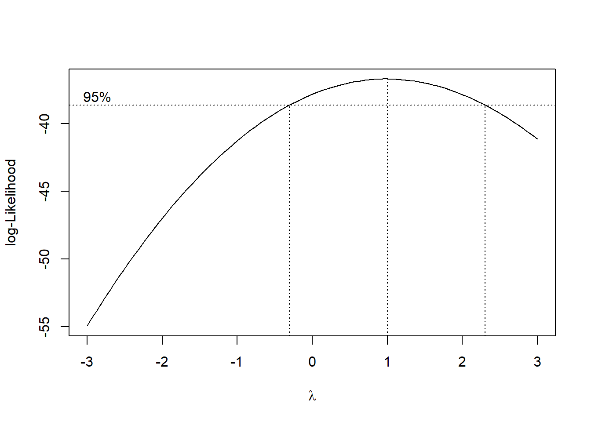
Con el Boxcox, se confirma que \(\lambda\) tiene un valor cercano a 1, pero que abarca el 0 en su intervalo de confianza.
Extracción de la tendencia
Estimación mediante un modelo lineal
A continucación, se realiza un modelo de regresión lineal simple utilizando como variable regresora el tiempo, y como variable de estudio, el PIB trimestral.
summary(fitLM <- lm(PIB3TS~time(PIB3TS), na.action=NULL))#Creando un modelo de regresión lineal
Call:
lm(formula = PIB3TS ~ time(PIB3TS), na.action = NULL)
Residuals:
Min 1Q Median 3Q Max
-41575 -2722 967 3974 7912
Coefficients:
Estimate Std. Error t value Pr(>|t|)
(Intercept) -1.217e+07 3.034e+05 -40.11 <2e-16 ***
time(PIB3TS) 6.135e+03 1.506e+02 40.73 <2e-16 ***
---
Signif. codes: 0 '***' 0.001 '**' 0.01 '*' 0.05 '.' 0.1 ' ' 1
Residual standard error: 7201 on 74 degrees of freedom
Multiple R-squared: 0.9573, Adjusted R-squared: 0.9567
F-statistic: 1659 on 1 and 74 DF, p-value: < 2.2e-16plot(PIB3TS, ylab="PIB trimestral en Colombia",xlab="Trimestre")
abline(fitLM,col = "red")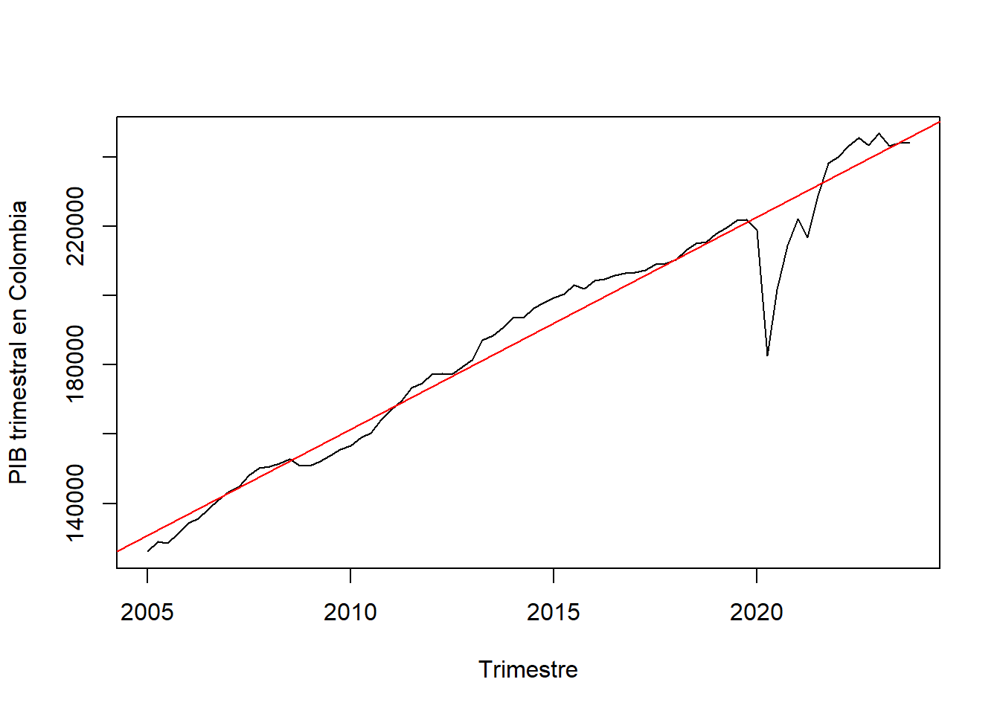
Haciendo una revisión meramente visual, el modelo lineal resultante logra capturar el comportamiento creciente del PIB trimestral, ignorando el suceso ocurrido en 2020 claramente. La serie resultante de extraer esta tendencia lineal es la siguiente.
PIB3NoLM=PIB3TS-predict(fitLM)#Eliminando la tendencia
plot_ly( x = time(PIB3NoLM), y = PIB3NoLM, type = 'scatter', mode = 'lines',color=I("red")) %>%
layout(title = 'PIB trimestral en Colombia con tendencia lineal extraída',
xaxis = list(title = 'Trimestre', rangeslider = list(type = 'date')))Al realizar la extracción respectiva, la serie resultante no es adecuada para continuar con el análisis, puesto que el valle resultante de la extracción en años de pandemia perjudica los próximos procedimientos. Lo cual provocaría que al realizar predicciones bajo el modelo lineal, éstas sean subajustadas.
Estimación no paramétrica
indice1=as.Date(as.yearmon(tk_index(PIB3TS)))#Convirtiendo en fecha el indice de DesempleoTSBox, deja como primero de enero cada fecha
indice1.1=yearmon(as.yearmon(tk_index(PIB3TS)))#Dejando esa fecha solo como año y mes
## Haciendo el objeto tsibble
df=data.frame(Fecha=indice1,PIB=as.matrix(PIB3TS))
colnames(df)[2]<-"PIB"
PIB3TSibble=as_tsibble(df)Using `Fecha` as index variable.PIB3TSibble# A tsibble: 76 x 2 [1D]
Fecha PIB
<date> <dbl>
1 2005-01-01 126126.
2 2005-04-01 128872.
3 2005-07-01 128600.
4 2005-10-01 131256.
5 2006-01-01 134234.
6 2006-04-01 135708.
7 2006-07-01 138464.
8 2006-10-01 141030.
9 2007-01-01 143333.
10 2007-04-01 144874.
# ℹ 66 more rowspib3TSibble <- tsibble(
periodo = seq(as.Date("2005-01-01"), as.Date("2023-12-01"), by = "3 months"),
valor = PIB3
)Using `periodo` as index variable.####Primera aproximación del ajuste STL
df%>%timetk::plot_time_series(Fecha, PIB,
.interactive = TRUE,
.plotly_slider = TRUE)#Creando una nueva columna con los datos ajustados por una regresión STL de grado 2 y utilizando el 20% de los datos, entre más pequeño, la curva es menos suave
###Ajuste STL moviendo los parámetros
df%>%mutate(PIBmod=smooth_vec(PIB,span = 0.1, degree = 2))%>%
ggplot(aes(Fecha, PIB)) +
geom_line() +
geom_line(aes(y = PIBmod), color = "red")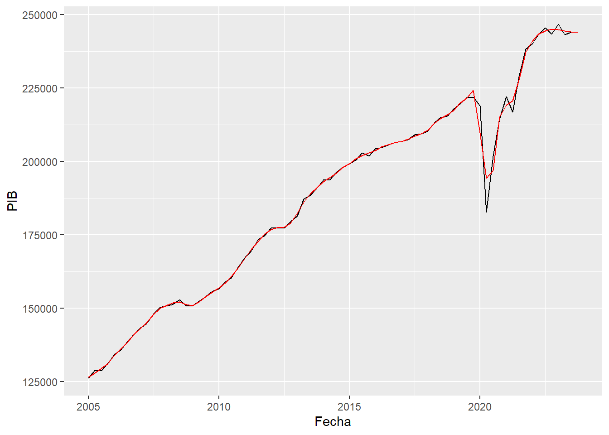
En este caso, la estimación no paramétrica gráficamente logra captar el comportamiento de la serie, incluyendo el periodo de pandemia.
Ahoa bien, vamos a ver una serie de tiempo con tendencia estimada por métodos no paramétricos extraída, con el fin de observar si la estimación no paramétrica describe mejor el comportamiento del PIB trimestral.
STLextra<-PIB3TS-smooth_vec(PIB3TS,span = 0.1, degree = 2)
plot_ly( x = time(STLextra), y = STLextra, type = 'scatter', mode = 'lines',color=I("red")) %>%
layout(title = 'PIB Trimestral con tendencia STL extraída',
xaxis = list(title = 'Trimestre', rangeslider = list(type = 'date')))Note que la componente de error sigue teniendo un pico muy bajo en los meses en que ocurrió la pandemia. Sin embargo, si no tuviésemos en cuenta el periodo de pandemia, el modelo no paramétrico tiene componente de error muy bajos en años anteriores, lo cual es un buen indicador.
tsibblePIB<-as_tsibble(PIB3TS)#Creando el objeto tsibble del PIB
tsibblePIB# A tsibble: 76 x 2 [1Q]
index value
<qtr> <dbl>
1 2005 Q1 126126.
2 2005 Q2 128872.
3 2005 Q3 128600.
4 2005 Q4 131256.
5 2006 Q1 134234.
6 2006 Q2 135708.
7 2006 Q3 138464.
8 2006 Q4 141030.
9 2007 Q1 143333.
10 2007 Q2 144874.
# ℹ 66 more rowstsibblePIB %>%
model(
STL(value ~ trend() +
season(window = "periodic"),
robust = TRUE)) %>%
components() %>%
autoplot()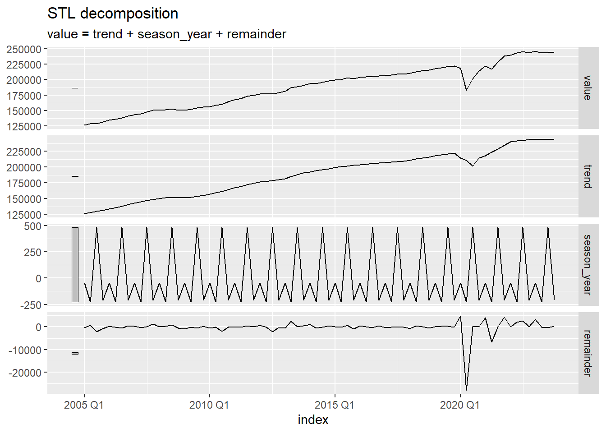
Según el gráfico anterior, como el PIB está indicando que no está presentando estacionalidad, de todos modos, el gráfico trata de modelar una pseudo-estacionalidad. Asimismo, la componente de error reporta valores bajos, a excepción del periodo de pandemia.
Diferencia ordinaria
DiferenciaOrd<-diff(PIB3TS)
plot_ly( x = time(DiferenciaOrd), y = DiferenciaOrd, type = 'scatter', mode = 'lines',color=I("red")) %>%
layout(title = 'PIB sin tendencia(Diferencia Ordinaria, lag=1)',
xaxis = list(title = 'Trimestre', rangeslider = list(type = 'date')))Las conclusiones al extraer la tendencia, mediante diferencia ordinaria,
Promedio móvil
PIBcomProm=decompose(PIB3TS)
plot(PIBcomProm)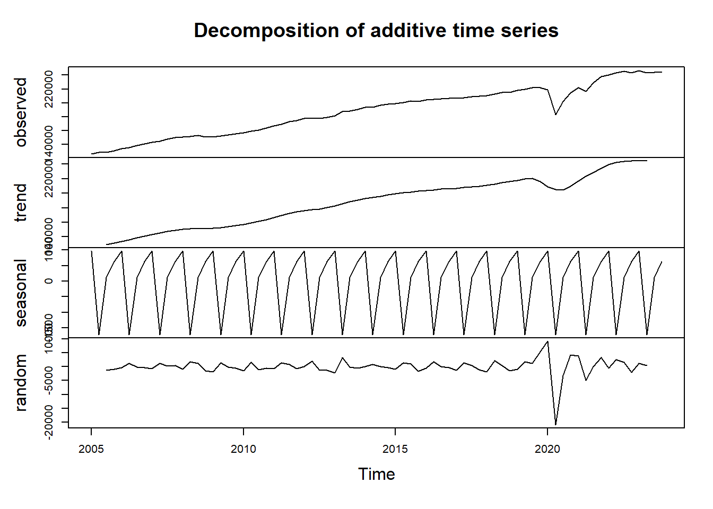
ExtraProm=PIB3TS-PIBcomProm$trend
plot_ly( x = time(ExtraProm), y = ExtraProm, type = 'scatter', mode = 'lines',color=I("red")) %>%
layout(title = 'PIB con tendencia extraída (Promedio móvil)',
xaxis = list(title = 'Trimestre', rangeslider = list(type = 'date')))Comparando las funciones de autocorrelación de las series sin tendencia
acf(PIB3TS,lag.max = length(PIB3TS))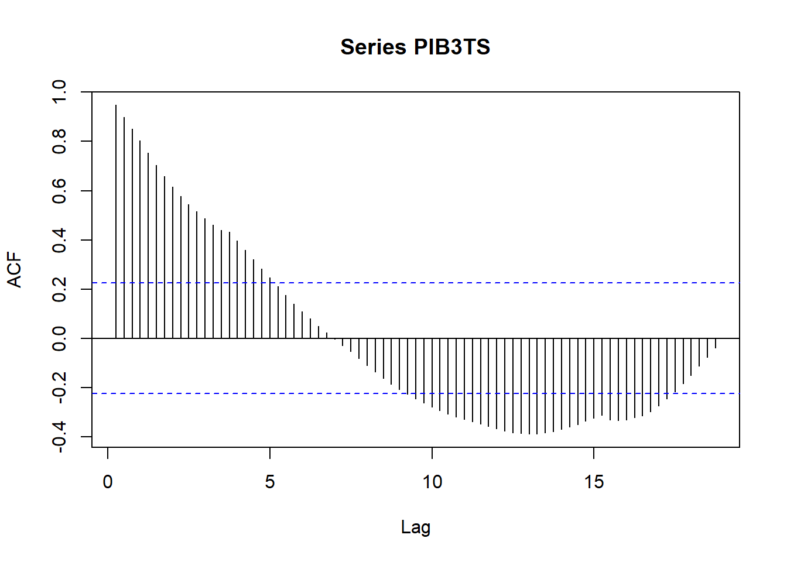
par(mfrow = c(2, 2))
acf(PIB3NoLM,lag.max =length(PIB3NoLM),main="Autocorrelación serie sin tendencia lineal")
acf(STLextra,lag.max =length(STLextra),main="Autocorrelación serie sin tendencia STL")
acf(DiferenciaOrd,lag.max =length(DiferenciaOrd),main="Autocorrelación serie sin tendencia\npor diferencia ordinaria")
acf(ExtraProm[3:74],lag.max =length(ExtraProm[3:74]),main="Autocorrelación serie sin tendencia\npor promedio móvil")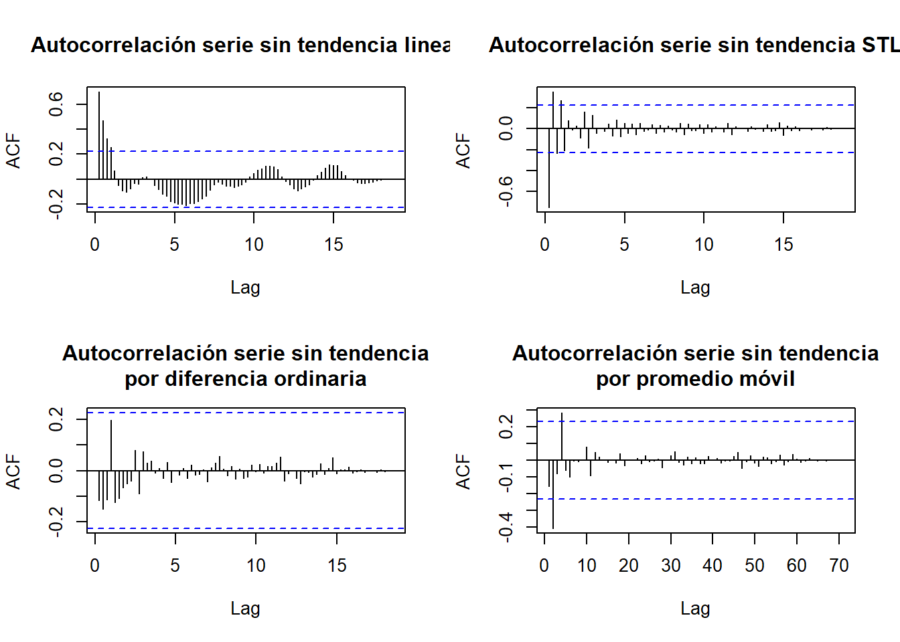
Explorando relaciones no lineales
Gráficos de retardos
El gráfico de retardos indica que hay una relación lineal con el retardo número 4 en las 3 series con tendencia extraída.
#El gráfico de retardos se realiza con la serie con tendencia extraída
#Tendencia STL extraída
par(mar = c(3,2,3,2))
lag1.plot(STLextra, 4,corr=T)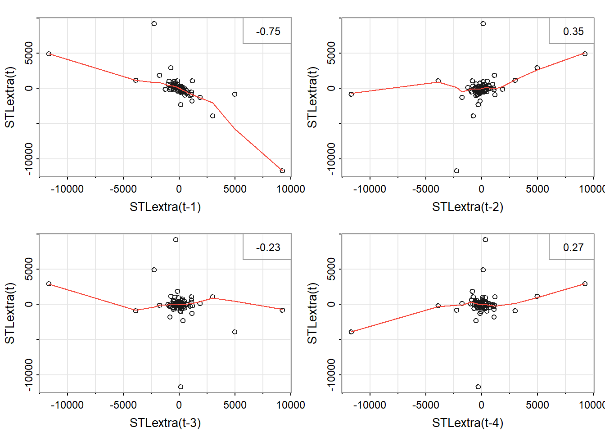
#Tendencia extraída por diferencia ordinaria
par(mar = c(3,2,3,2))
lag1.plot(DiferenciaOrd, 4,corr=T)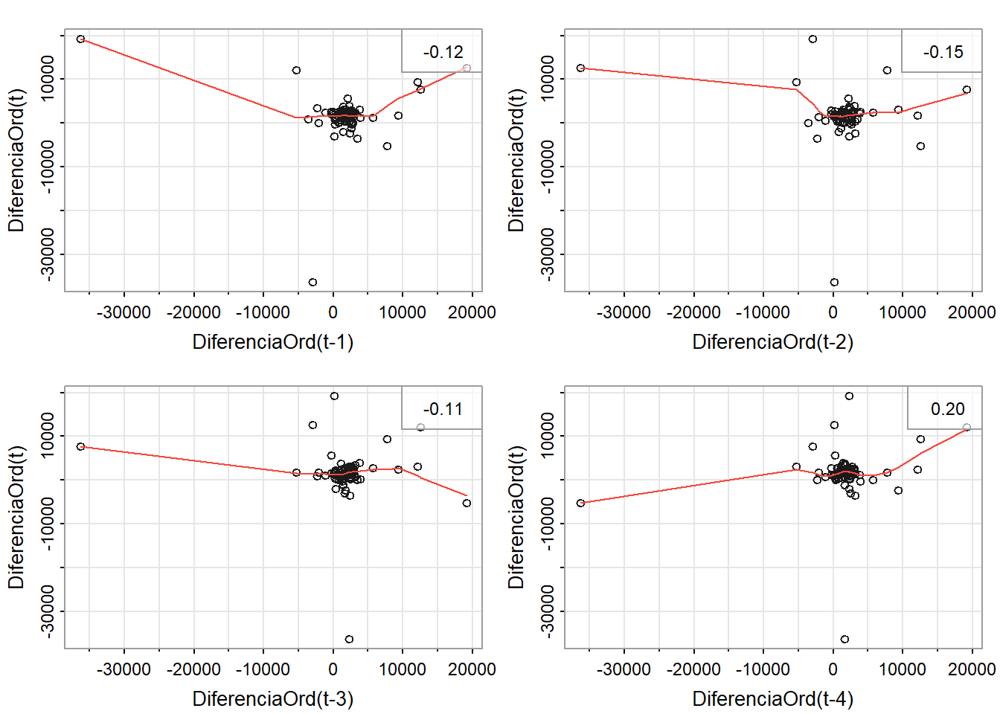
#Tendencia extraída por promedio móvil
par(mar = c(3,2,3,2))
lag1.plot(ExtraProm[3:74], 4,corr=T)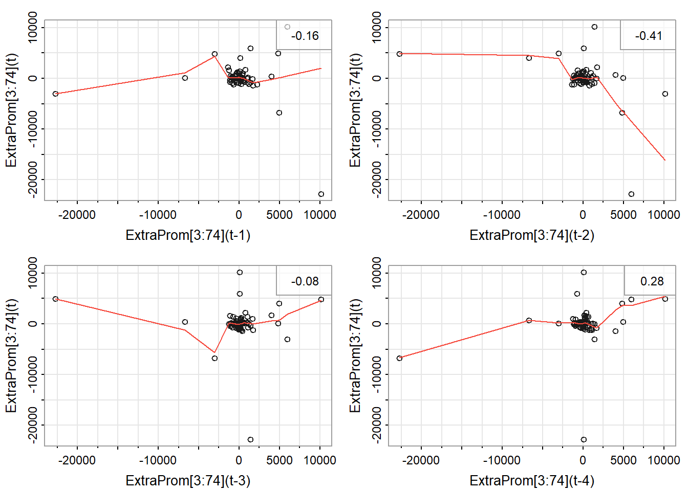
Detección de estacionalidad
Un primer gráfico propuesto para la detección de la estacionalidad de forma visual es el siguiente, recordemos que está siendo aplicado en la serie con la tendencia extraída.
#Tendencia STL extraída
TSstudio::ts_heatmap(STLextra,title = "Mapa de Calor - PIB en Colombia (STL)")#Tendencia extraída por promedio móvil
TSstudio::ts_heatmap(ExtraProm,title = "Mapa de Calor - PIB en Colombia(Promedio móvil)")#Tendencia extraída por diferencia ordinaria
TSstudio::ts_heatmap(DiferenciaOrd,title = "Mapa de Calor - PIB en Colombia(Diferencia Ordinaria)")monthplot(STLextra,main="Subseries(STL)")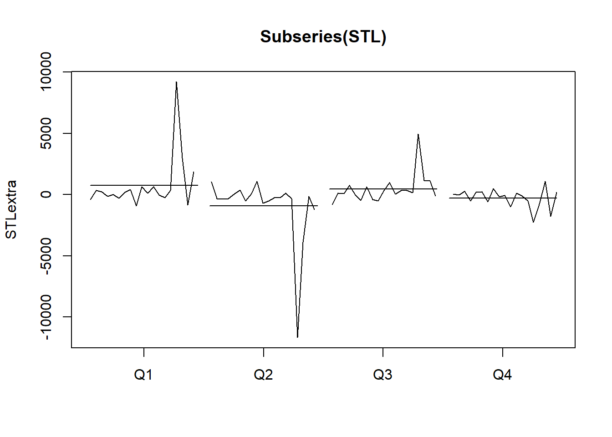
monthplot(ExtraProm,main="Subseries(Promedio móvil)")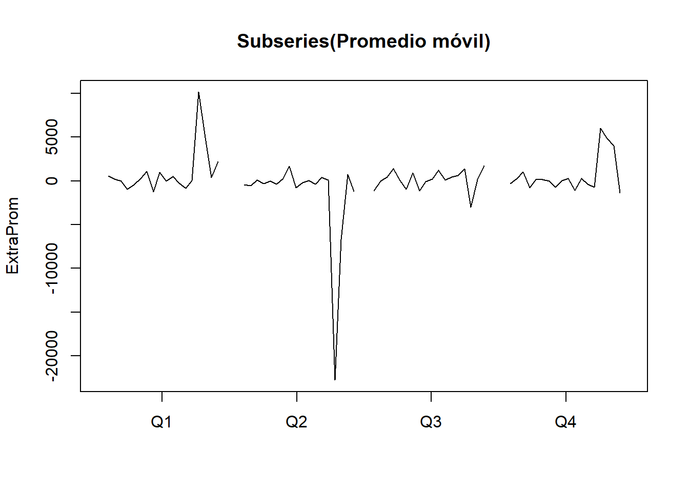
monthplot(DiferenciaOrd,main="Subseries(Diferencia Ordinaria)")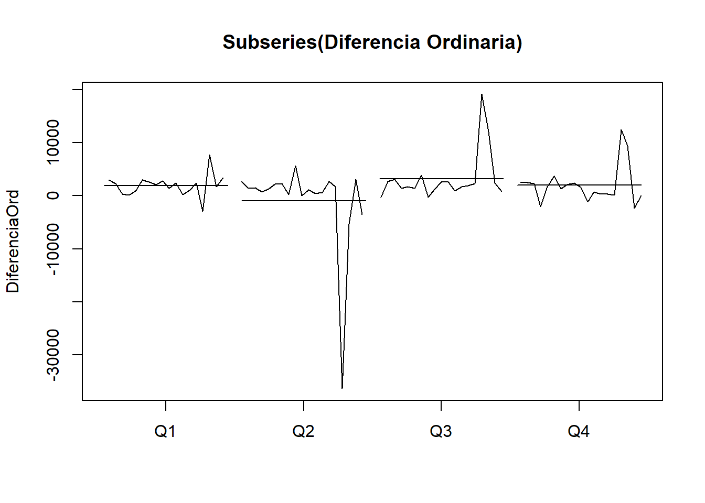
Otra alternativa es utilizar los gráficos de cajas
tsibblePIB <- tsibblePIB %>%
mutate(index = as.Date(index))
tsibblePIB<-tsibblePIB%>%mutate(Diferencia=value-lag(value))
tsibblePIB %>%
na.omit() %>%
plot_seasonal_diagnostics(.date_var = index, .value = Diferencia, .feature_set = c("quarter"), .geom = "boxplot")Finalmente, un gráfico con las estimaciones de las densidades.
ggplot(tsibblePIB %>%na.omit()|>
mutate(
Trimestre = str_c("Trimestre ", as.character(lubridate::quarter(index)))
), aes(x = Diferencia)) +
geom_density(aes(fill = Trimestre)) +
ggtitle("LosPass - Estimación de la densidad vía Kernel por trimestre") +
facet_grid(rows = vars(as.factor(Trimestre)))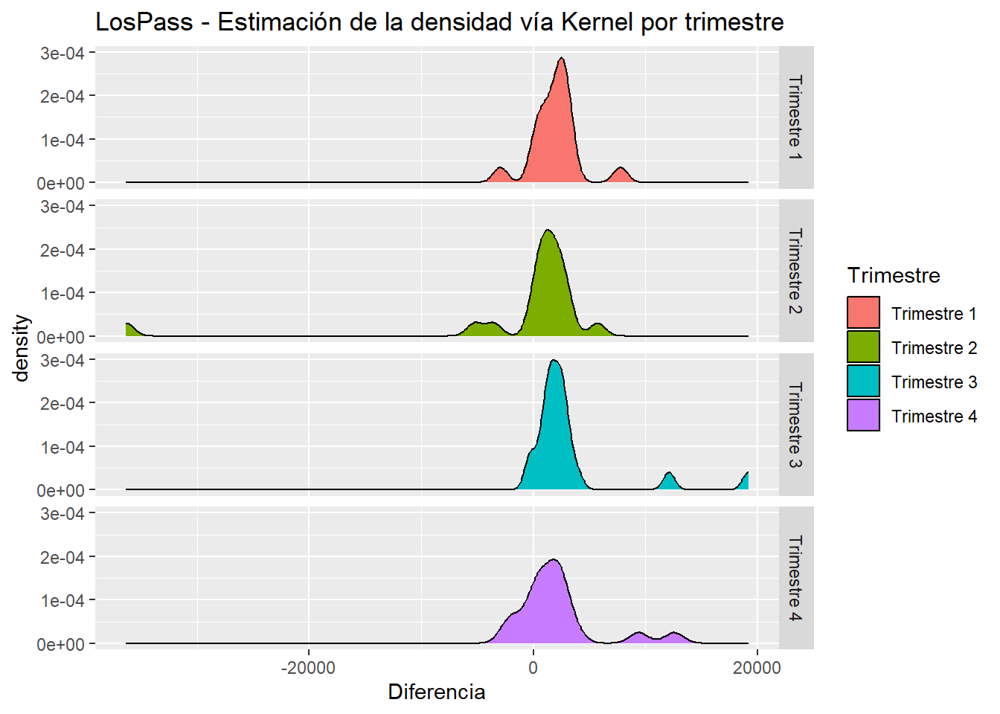
Encontrando el periodo de la serie
#STL
PeriodgramadTra1=spectrum(as.numeric(STLextra),log='no')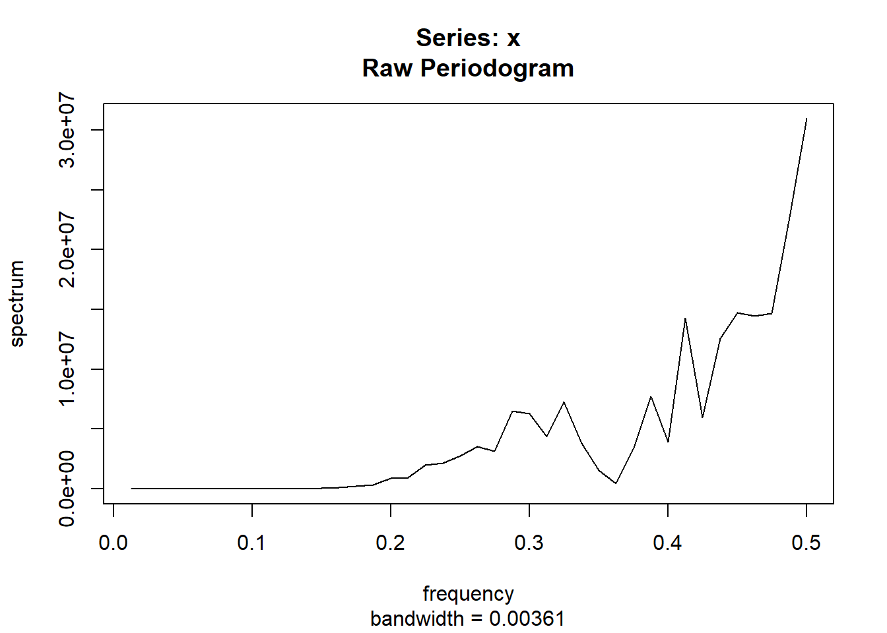
ubicacion1=which.max(PeriodgramadTra1$spec)
#Promedio móvil
PeriodgramadTra2=spectrum(as.numeric(ExtraProm[3:74]),log='no')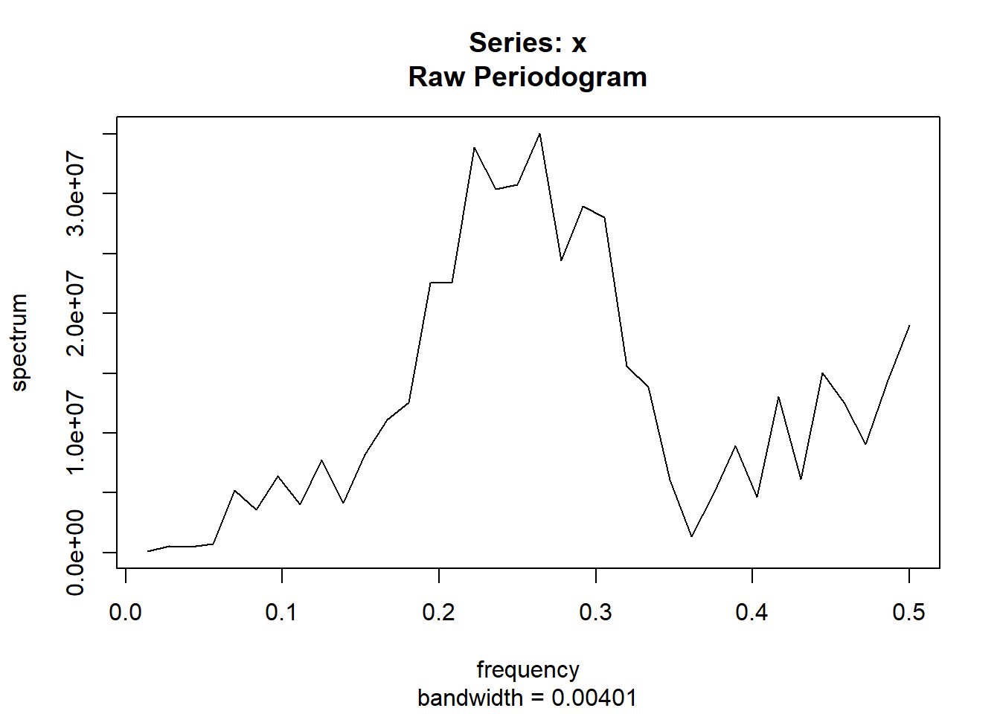
ubicacion2=which.max(PeriodgramadTra2$spec)
#Diferencia ordinaria
PeriodgramadTra3=spectrum(as.numeric(DiferenciaOrd),log='no')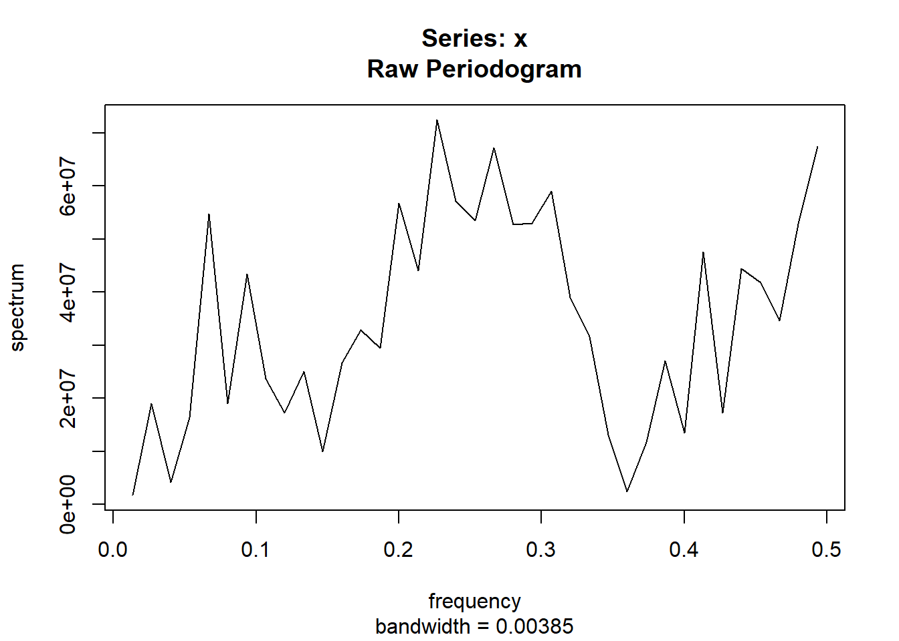
ubicacion3=which.max(PeriodgramadTra3$spec)
sprintf("El valor de la frecuencia donde se máximiza el periodograma para la serie con tendencia STL extraída es: %s",PeriodgramadTra1$freq[ubicacion1])[1] "El valor de la frecuencia donde se máximiza el periodograma para la serie con tendencia STL extraída es: 0.5"sprintf("El periodo correspondiente es aproximadamente: %s",1/PeriodgramadTra1$freq[ubicacion1])[1] "El periodo correspondiente es aproximadamente: 2"sprintf("El valor de la frecuencia donde se máximiza el periodograma para la serie con tendencia extraída por promedio móvil es: %s",PeriodgramadTra2$freq[ubicacion2])[1] "El valor de la frecuencia donde se máximiza el periodograma para la serie con tendencia extraída por promedio móvil es: 0.263888888888889"sprintf("El periodo correspondiente es aproximadamente: %s",1/PeriodgramadTra2$freq[ubicacion2])[1] "El periodo correspondiente es aproximadamente: 3.78947368421053"sprintf("El valor de la frecuencia donde se máximiza el periodograma para la serie con tendencia extraída por diferencia ordinaria es: %s",PeriodgramadTra3$freq[ubicacion3])[1] "El valor de la frecuencia donde se máximiza el periodograma para la serie con tendencia extraída por diferencia ordinaria es: 0.226666666666667"sprintf("El periodo correspondiente es aproximadamente: %s",1/PeriodgramadTra3$freq[ubicacion3])[1] "El periodo correspondiente es aproximadamente: 4.41176470588235"De acuerdo a la información reportada en el gráfico de periodograma, no es necesario modelar la estacionalidad.
Suavizamiento Exponencial
El suavizamiento exponencial es un modelo que contiene 3 parámetros, dos relacionados a la estimación de la componente de tendencia, y el tercero a la componente de estacionalidad. Teniendo en cuenta que para este conjunto de datos no se requiere modelar la estacionalidad, solo se tendrán en cuenta los parámetros correspondientes a la compente de tendencia.
\[\begin{align*} a_t & = \alpha(x_t-s_{t-p}) + (1-\alpha)(a_{t-1}+b_{t-1}) \\ b_t & = \beta(a_t-a_{t-1}) + (1-\beta)b_{t-1} \\ \end{align*}\]El siguiente modelo se manejará con los datos originales, por lo tanto, para evaluar la capacidad predictiva del modelo, utilizando la predicción a un paso, emplearemos el 80% de la serie como conjunto de entrenamiento y el 20% restante como prueba. Es decir, el periodo de entrenamiento corresponde a los primeros 61 trimestres, es decir, de enero de 2005 hasta marzo de 2020, por otro lado, el periodo de prueba corresponde a abril de 2020 hasta diciembre de 2023.
Train=ts(PIB3TS[1:61], start = c(2005, 1),frequency = 4)
Test=ts(PIB3TS[62:76],start=c(2020,2),frequency = 4)
HWAP=stats::HoltWinters(Train,seasonal=NULL)
plot_ly(x = time(PIB3TS[5:61]), y = PIB3TS[5:61], type = 'scatter', mode = 'lines', color = I("red"), name = "Original") %>% add_trace(y = HWAP$fitted[,1], mode = 'lines', line = list(color = 'blue'), name = "EWMA") %>% layout(title = 'Suavizamiento Exponencial',xaxis = list(title = 'Trimestre', rangeslider = list(type = 'date'))) ajustados=fitted(HWAP)#Guarda las estimaciones que hace el modelo para cada trimestre desde enero de 2004 hasta marzo de 2020
plot(ajustados)#Gráfico de las tres componentes, nivel, pendiente y estacionalidad 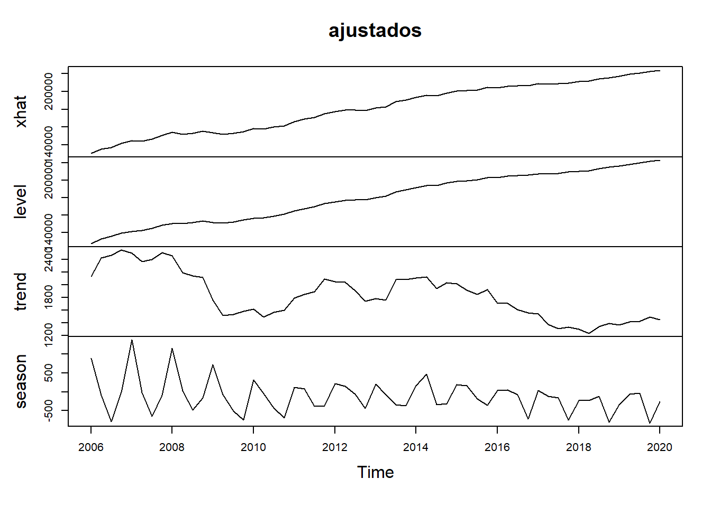
HWAPHolt-Winters exponential smoothing with trend and additive seasonal component.
Call:
stats::HoltWinters(x = Train, seasonal = NULL)
Smoothing parameters:
alpha: 0.8704311
beta : 0.08945198
gamma: 1
Coefficients:
[,1]
a 219922.86730
b 1060.45471
s1 -47.35115
s2 76.38751
s3 -893.42502
s4 -918.45411La estimación del parámetro de Nivel alpha es 0.8704311, de Pendiente beta 0.08945198 y de estacionalidad gamma 1.
Por último evaluaremos la capacidad predictiva del modelo haciendo las 15 predicciones para el periodo correspondiente a prueba. Abril de 2020 hasta diciembre de 2023.
predictionHWAP_1=forecast::forecast(HWAP,h=15)
predictionHWAP_1 Point Forecast Lo 80 Hi 80 Lo 95 Hi 95
2020 Q2 220936.0 218779.6 223092.3 217638.1 224233.8
2020 Q3 222120.2 219148.4 225091.9 217575.3 226665.0
2020 Q4 222210.8 218505.8 225915.9 216544.4 227877.2
2021 Q1 223246.2 218842.3 227650.2 216511.0 229981.5
2021 Q2 225177.8 219944.1 230411.5 217173.5 233182.1
2021 Q3 226362.0 220465.3 232258.7 217343.8 235380.2
2021 Q4 226452.6 219888.3 233016.9 216413.4 236491.9
2022 Q1 227488.1 220248.8 234727.3 216416.6 238559.5
2022 Q2 229419.6 221378.9 237460.3 217122.4 241716.8
2022 Q3 230603.8 221878.5 239329.1 217259.6 243948.0
2022 Q4 230694.4 221272.3 240116.5 216284.6 245104.3
2023 Q1 231729.9 221598.6 241861.1 216235.4 247224.3
2023 Q2 233661.4 222705.1 244617.7 216905.2 250417.6
2023 Q3 234845.6 223161.4 246529.8 216976.2 252715.1
2023 Q4 234936.3 222510.8 247361.7 215933.1 253939.4plot(predictionHWAP_1)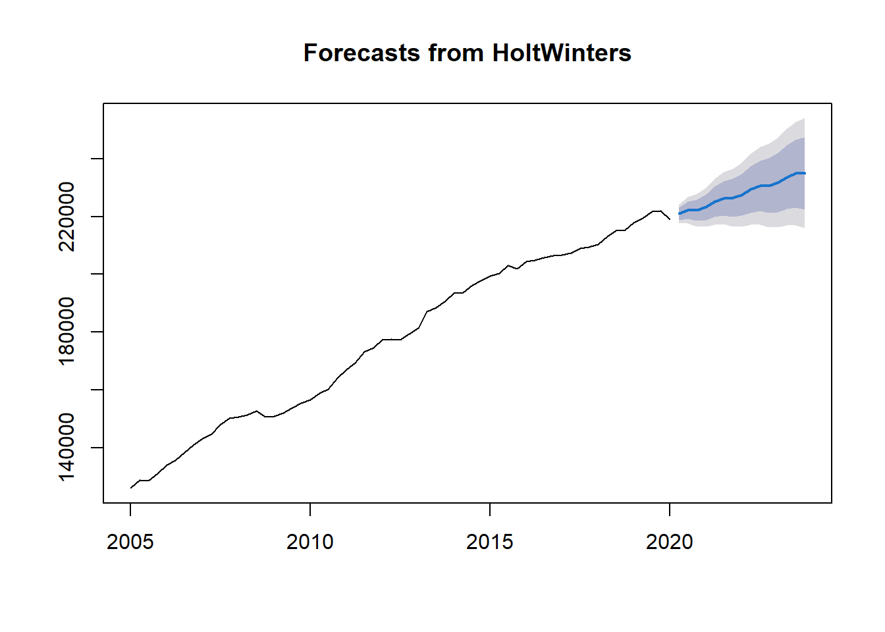
El error cuadrático medio es
mean((Test-predictionHWAP_1$mean)^2)[1] 225265879Recordemos que el error cuadrático medio es alto debido a que los datos se encuentran en la escala original.
plot_ly(x = time(Test), y = Test, type = 'scatter', mode = 'lines', color = I("red"), name = "PIB") %>% add_trace(y = predictionHWAP_1$mean, mode = 'lines', line = list(color = 'blue'), name = "Predicciones") %>% layout(title = 'PIB vs Predicciones (Abril 2020-Diciembre 2023)',xaxis = list(title = 'Trimestre', rangeslider = list(type = 'date')))Usando objetos tsibble ahora
TrainOriginal=ts(PIB3TS[1:61], start = c(2005, 1),frequency = 4)
tsibbleBoxPIBTrain<-as_tsibble(TrainOriginal)
Ajuste1=tsibbleBoxPIBTrain%>%
model(ETS(value~ error("A")+trend("A")+season("A")))
Pronostico1=Ajuste1 %>%
fabletools::forecast(h=15)
Pronostico1 # A fable: 15 x 4 [1Q]
# Key: .model [1]
.model index value .mean
<chr> <qtr> <dist> <dbl>
1 "ETS(value ~ error(\"A\") + trend(\"A\") +… 2020 Q2 N(220415, 2271400) 2.20e5
2 "ETS(value ~ error(\"A\") + trend(\"A\") +… 2020 Q3 N(221585, 4919471) 2.22e5
3 "ETS(value ~ error(\"A\") + trend(\"A\") +… 2020 Q4 N(222281, 8e+06) 2.22e5
4 "ETS(value ~ error(\"A\") + trend(\"A\") +… 2021 Q1 N(223298, 1.1e+07) 2.23e5
5 "ETS(value ~ error(\"A\") + trend(\"A\") +… 2021 Q2 N(224709, 1.5e+07) 2.25e5
6 "ETS(value ~ error(\"A\") + trend(\"A\") +… 2021 Q3 N(225879, 2e+07) 2.26e5
7 "ETS(value ~ error(\"A\") + trend(\"A\") +… 2021 Q4 N(226575, 2.5e+07) 2.27e5
8 "ETS(value ~ error(\"A\") + trend(\"A\") +… 2022 Q1 N(227592, 3e+07) 2.28e5
9 "ETS(value ~ error(\"A\") + trend(\"A\") +… 2022 Q2 N(229003, 3.6e+07) 2.29e5
10 "ETS(value ~ error(\"A\") + trend(\"A\") +… 2022 Q3 N(230173, 4.3e+07) 2.30e5
11 "ETS(value ~ error(\"A\") + trend(\"A\") +… 2022 Q4 N(230869, 5.1e+07) 2.31e5
12 "ETS(value ~ error(\"A\") + trend(\"A\") +… 2023 Q1 N(231886, 5.9e+07) 2.32e5
13 "ETS(value ~ error(\"A\") + trend(\"A\") +… 2023 Q2 N(233297, 6.7e+07) 2.33e5
14 "ETS(value ~ error(\"A\") + trend(\"A\") +… 2023 Q3 N(234467, 7.7e+07) 2.34e5
15 "ETS(value ~ error(\"A\") + trend(\"A\") +… 2023 Q4 N(235163, 8.7e+07) 2.35e5Pronostico1%>%autoplot(tsibbleBoxPIBTrain)+geom_line(aes(y=.fitted),col="red",data=augment(Ajuste1))+labs(y=" ",title="Pronóstico u ajustados")+guides(colour="none")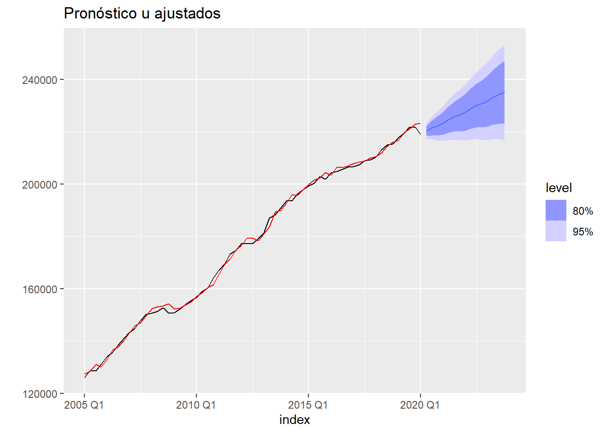
Raíz de error cuadrático medio
mean((Test-Pronostico1$.mean)^2)[1] 222314092Suavizamiento exponencial utilizando la librería modeltime
El procedimiento inicia con la creación de un objeto tibble de la serie transformada.
TibPIB<-as_tibble(PIB3TSibble)
TibPIB$Fecha<-as.Date(TibPIB$Fecha) Posteriormente se divide la serie en conjunto de entrenamiento y de prueba.
Particion=timetk::time_series_split(TibPIB,date_var=Fecha,assess = 4,cumulative = TRUE)#En este caso, al decir assess=4 indica que las últimas 4 observaciones serán utilizadas como conjunto de prueba
Particion%>%
tk_time_series_cv_plan()%>%
plot_time_series_cv_plan(Fecha,PIB) Ajustando el modelo
#ModeloEWMA<-modeltime::exp_smoothing(error="additive",trend="additive",season=NULL )%>%
#set_engine("ets")%>%
#fit(PIB ~ Fecha,data=training(Particion))
#modeltime_table(ModeloEWMA) %>%
#modeltime_calibrate(testing(Particion))%>%
#modeltime_forecast(new_data = testing(Particion), actual_data = TibPIB)%>%
#plot_modeltime_forecast(.conf_interval_fill = "lightblue")##Se crea un objeto de pronóstico con los valores sobre el conjunto de prueba.
#PronosticoEWMA<-modeltime_table(ModeloEWMA) %>%
#modeltime_calibrate(testing(Particion))%>%
#modeltime_forecast(new_data = testing(Particion),actual_data = TibPIB)
#PronosticoEWMA####Los mismo que hicimos anteriormente pero ahora creando objetos
#Modeltime
#model_tbl<-modeltime_table(ModeloEWMA)
## Calibración
#calibration_tbl<-model_tbl%>%
#modeltime_calibrate(testing(Particion))
## Pronóstico sobre el conjunto de prueba
#calibration_tbl%>%
#modeltime_forecast(new_data = testing(Particion),actual_data = TibPIB)
###Residuales
#residuales_ajuste<-model_tbl%>%
#modeltime_calibrate(new_data=training(Particion))%>%
#modeltime_residuals()
#residuales_ajuste%>%plot_modeltime_residuals( .type="timeplot", .interactive = TRUE)
### Precisión de los pronósticos
#calibration_tbl%>%
#modeltime_accuracy()
## Re-ajuste y predicción de valores futuros
#re_ajuste<-calibration_tbl%>%
#modeltime_refit(data=TibPIB)
#re_ajuste%>%
#modeltime_forecast(h=4,actual_data = TibPIB)%>%
#plot_modeltime_forecast()